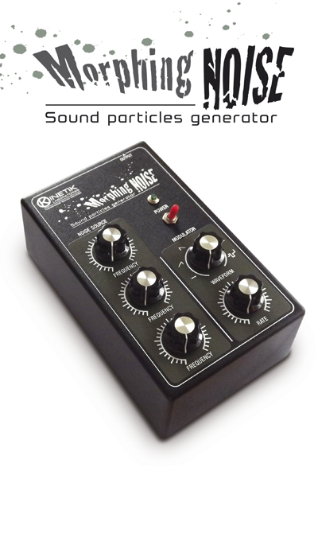

MORPHING NOISE

Production year: 2015
Morphing Noise combines a noise source sound generator and a modulator circuit.
The NOISE SOURCE circuit is formed by three oscillators modulating each other and generates similar sounds to those obtainable with cross-modulation technique.
Its sonic character far exceeds the typical white or pink noise sources.
Tuning the oscillator pitches allows timbral metamorphosis, with complex variations in tone and granularity.
The oscillator pitches can be automatically modulated with the low frequency oscillator implemented in the MODULATOR circuit, generating sounds which evolve over time.
The MORPHING NOISE sound particles generator is ideal to create complex noise backgrounds and a precious tool in the sound design process. It must be supplied with an external power supply, providing 9vDC on 2.1mm barrel jack, negative tip.